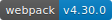
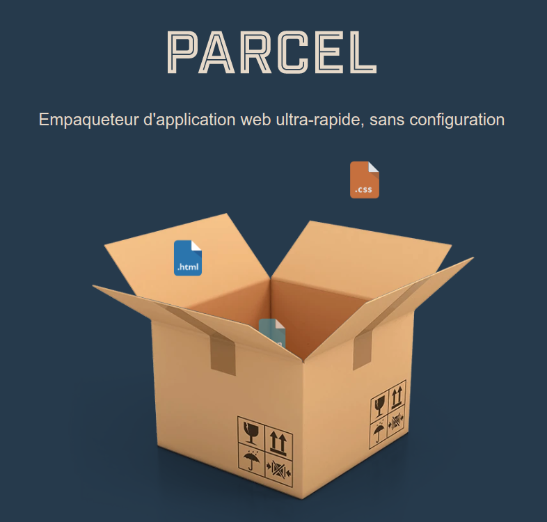

name: intro_title class: middle <div style="margin:auto;text-align:center;display:flex;"> <h1>Introduction à </h1> <img src="img/logo-on-white-bg.png" style="width:50%;height:50%;" /> </div> <p style="bottom:30px;right:20px;position:absolute;opacity:0.5;">09/05/2019</p>  --- background-image: url(img/logo-on-white-bg.png) name: plan # Au programme : --- name: plan2 # Au programme : 1. Principaux concepts -- 2. Loaders et plugins -- 3. Exemples d'utilisation -- 4. Alternatives à webpack ? --- class: center, middle name: part1 # 1. Principaux concepts --- class: middle Webpack est un outil de **construction et d'empaquetage de modules** pour applications JS *modernes*. Lorsqu'il analyse le code d'un projet il va créer un **graphe de dépendances** et permettre de **générer un ou plusieurs fichiers** utilisables, par exemple, depuis un navigateur web. Il dispose de différentes fonctionnalités permettant d'avoir un **_workflow_ plus productif**. --- <div style="width: 85%;text-align: center;margin: auto;"> <svg viewBox="0 0 1088 615" version="1.1" xmlns="http://www.w3.org/2000/svg" xmlns:xlink="http://www.w3.org/1999/xlink"> <g stroke-width="1" fill="none" fill-rule="evenodd"> <text font-family="'Source Sans Pro', sans-serif" font-size="18" font-weight="600" fill="#86A5BA"><tspan x="933.778" y="459">STATIC ASSETS</tspan></text> <g transform="translate(1002, 326)"> <g><use fill-opacity="0.1" fill="#526B78" fill-rule="evenodd" xlink:href="#path-1"></use><rect stroke="#526B78" stroke-width="4" x="-2" y="-2" width="84" height="84" rx="3"></rect></g> <text font-family="'Source Sans Pro', sans-serif" font-size="22" font-weight="500" fill="#111111"><tspan x="18.891" y="46.7096774">.png</tspan></text> </g> <g transform="translate(1002, 214)"> <g><use fill-opacity="0.1" fill="#526B78" fill-rule="evenodd" xlink:href="#path-2"></use><rect stroke="#526B78" stroke-width="4" x="-2" y="-2" width="84" height="84" rx="3"></rect></g> <text font-family="'Source Sans Pro', sans-serif" font-size="22" font-weight="500" fill="#111111"><tspan x="22.532" y="46.7096774">.css</tspan></text> </g> <g transform="translate(894, 326)"> <g><use fill-opacity="0.1" fill="#526B78" fill-rule="evenodd" xlink:href="#path-3"></use><rect stroke="#526B78" stroke-width="4" x="-2" y="-2" width="84" height="84" rx="3"></rect></g> <text font-family="'Source Sans Pro', sans-serif" font-size="22" font-weight="500" fill="#111111"><tspan x="21.817" y="46.7096774">.jpg</tspan></text> </g> <g transform="translate(894, 214)"> <g><use fill-opacity="0.1" fill="#526B78" fill-rule="evenodd" xlink:href="#path-4"></use><rect stroke="#526B78" stroke-width="4" x="-2" y="-2" width="84" height="84" rx="3"></rect></g> <text font-family="'Source Sans Pro', sans-serif" font-size="22" font-weight="500" fill="#111111"><tspan x="29" y="46.7096774">.js</tspan></text> </g> <g transform="translate(342, 225)" stroke="#7E8C94" stroke-width="4"> <path d="M499.558824,86.52 C499.558824,86.52 484.852941,81.02 439.908088,109.436667 C394.963235,137.853333 380.992647,164.436667 380.992647,164.436667" stroke-dasharray="7"></path> <path d="M499.558824,86.0616667 C499.558824,86.0616667 484.852941,91.5616667 439.908088,63.145 C394.963235,34.7283333 380.992647,8.145 380.992647,8.145" stroke-dasharray="7"></path> <path d="M0.477941176,170.395 C0.477941176,170.395 169.382939,98.895 447.847936,98.895" stroke-dasharray="6"></path> <path d="M0.477941176,72.395 C0.477941176,72.395 169.382939,0.895 447.847936,0.895" stroke-dasharray="6" transform="translate(224.162939, 36.645000) scale(1, -1) translate(-224.162939, -36.645000) "></path> </g> <text font-family="'Source Sans Pro', sans-serif" font-size="18" font-weight="600" fill="#86A5BA"><tspan x="24.934" y="562">MODULES WITH DEPENDENCIES</tspan></text> <g transform="translate(228, 335)"> <g><use fill-opacity="0.1" fill="#526B78" fill-rule="evenodd" xlink:href="#path-5"></use><rect stroke="#526B78" stroke-width="4" x="-2" y="-2" width="66" height="66" rx="3"></rect></g> <text font-family="'Source Sans Pro', sans-serif" font-size="22" font-weight="500" fill="#111111"><tspan x="12.817" y="38">.jpg</tspan></text> </g> <g transform="translate(228, 223)"> <g><use fill-opacity="0.1" fill="#526B78" fill-rule="evenodd" xlink:href="#path-6"></use><rect stroke="#526B78" stroke-width="4" x="-2" y="-2" width="66" height="66" rx="3"></rect></g> <text font-family="'Source Sans Pro', sans-serif" font-size="22" font-weight="500" fill="#111111"><tspan x="9.891" y="38">.png</tspan></text> </g> <g transform="translate(302, 414.500000) scale(1, -1) translate(-302, -414.500000) translate(182, 404)"> <rect fill="#BBDBEC" x="0" y="0" width="2" height="6"></rect> <rect fill="#BBDBEC" x="76" y="6" width="2" height="12"></rect> <rect fill="#BBDBEC" transform="translate(75.304690, 4.704683) rotate(-45) translate(-75.304690, -4.704683) " x="74.3046896" y="1.87968342" width="2" height="5.6500001"></rect> <rect fill="#BBDBEC" x="2" y="2" width="72" height="2"></rect> <polyline stroke="#BBDBEC" stroke-width="2" points="80 12 77 20.8000002 74 12"></polyline> </g> <g transform="translate(116, 391)"> <g><use fill-opacity="0.1" fill="#526B78" fill-rule="evenodd" xlink:href="#path-7"></use><rect stroke="#526B78" stroke-width="4" x="-2" y="-2" width="66" height="66" rx="3"></rect></g> <text font-family="'Source Sans Pro', sans-serif" font-size="22" font-weight="500" fill="#111111"><tspan x="8.076" y="38">.sass</tspan></text> </g> <g transform="translate(116, 279)"> <g><use fill-opacity="0.1" fill="#526B78" fill-rule="evenodd" xlink:href="#path-8"></use><rect stroke="#526B78" stroke-width="4" x="-2" y="-2" width="66" height="66" rx="3"></rect></g> <text font-family="'Source Sans Pro', sans-serif" font-size="22" font-weight="500" fill="#111111"><tspan x="8.076" y="38">.sass</tspan></text> </g> <g transform="translate(182, 201)"> <rect fill="#BBDBEC" x="0" y="0" width="2" height="6"></rect> <rect fill="#BBDBEC" x="76" y="113" width="2" height="12"></rect> <rect fill="#BBDBEC" transform="translate(75.304690, 111.704683) rotate(-45) translate(-75.304690, -111.704683) " x="74.3046896" y="108.879683" width="2" height="5.6500001"></rect> <rect fill="#BBDBEC" x="26" y="109" width="48" height="2"></rect> <rect fill="#BBDBEC" transform="translate(24.704683, 108.304690) rotate(-45) translate(-24.704683, -108.304690) " x="23.7046835" y="105.47969" width="2" height="5.6500001"></rect> <rect fill="#BBDBEC" x="22" y="6" width="2" height="101"></rect> <rect fill="#BBDBEC" transform="translate(21.304690, 4.704683) rotate(-45) translate(-21.304690, -4.704683) " x="20.3046896" y="1.87968342" width="2" height="5.6500001"></rect> <rect fill="#BBDBEC" x="2" y="2" width="18" height="2"></rect> <polyline stroke="#BBDBEC" stroke-width="2" points="80 118 77 126.8 74 118"></polyline> </g> <g transform="translate(182, 189)"> <rect fill="#BBDBEC" x="0" y="0" width="2" height="6"></rect> <rect fill="#BBDBEC" x="76" y="6" width="2" height="19"></rect> <rect fill="#BBDBEC" transform="translate(75.304690, 4.704683) rotate(-45) translate(-75.304690, -4.704683) " x="74.3046896" y="1.87968342" width="2" height="5.6500001"></rect> <rect fill="#BBDBEC" x="2" y="2" width="72" height="2"></rect> <polyline stroke="#BBDBEC" stroke-width="2" points="80 18 77 26.8000002 74 18"></polyline> </g> <g transform="translate(116, 167)"> <g><use fill-opacity="0.1" fill="#526B78" fill-rule="evenodd" xlink:href="#path-9"></use><rect stroke="#526B78" stroke-width="4" x="-2" y="-2" width="66" height="66" rx="3"></rect></g> <text font-family="'Source Sans Pro', sans-serif" font-size="22" font-weight="500" fill="#111111"><tspan x="20" y="38">.js</tspan></text> </g> <g transform="translate(110, 470.500000) scale(1, -1) translate(-190, -470.500000) translate(150, 460)"> <rect fill="#BBDBEC" x="0" y="0" width="2" height="6"></rect> <rect fill="#BBDBEC" x="76" y="6" width="2" height="12"></rect> <rect fill="#BBDBEC" transform="translate(75.304690, 4.704683) rotate(-45) translate(-75.304690, -4.704683) " x="74.3046896" y="1.87968342" width="2" height="5.6500001"></rect> <rect fill="#BBDBEC" x="2" y="2" width="72" height="2"></rect> <polyline stroke="#BBDBEC" stroke-width="2" points="80 12 77 20.8000002 74 12"></polyline> </g> <g transform="translate(4, 447)"> <g><use fill-opacity="0.1" fill="#526B78" fill-rule="evenodd" xlink:href="#path-10"></use><rect stroke="#526B78" stroke-width="4" x="-2" y="-2" width="66" height="66" rx="3"></rect></g> <text font-family="'Source Sans Pro', sans-serif" font-size="22" font-weight="500" fill="#111111"><tspan x="8.076" y="38">.sass</tspan></text> </g> <g transform="translate(70, 363)"> <rect fill="#BBDBEC" x="0" y="0" width="2" height="6"></rect> <rect fill="#BBDBEC" x="76" y="6" width="2" height="12"></rect> <rect fill="#BBDBEC" transform="translate(75.304690, 4.704683) rotate(-45) translate(-75.304690, -4.704683) " x="74.3046896" y="1.87968342" width="2" height="5.6500001"></rect> <rect fill="#BBDBEC" x="2" y="2" width="72" height="2"></rect> <polyline stroke="#BBDBEC" stroke-width="2" points="80 12 77 20.8000002 74 12"></polyline> </g> <g transform="translate(4, 335)"> <g><use fill-opacity="0.1" fill="#526B78" fill-rule="evenodd" xlink:href="#path-11"></use><rect stroke="#526B78" stroke-width="4" x="-2" y="-2" width="66" height="66" rx="3"></rect></g> <text font-family="'Source Sans Pro', sans-serif" font-size="22" font-weight="500" fill="#111111"><tspan x="15.38" y="38">.cjs</tspan></text> </g> <g transform="translate(38, 307)"> <rect fill="#BBDBEC" x="0" y="22" width="6" height="2"></rect> <rect fill="#BBDBEC" x="2" y="6" width="2" height="16"></rect> <rect fill="#BBDBEC" transform="translate(4.704683, 4.704683) rotate(45) translate(-4.704683, -4.704683) " x="3.70468347" y="1.87968342" width="2" height="5.6500001"></rect> <rect fill="#BBDBEC" x="6" y="2" width="62" height="2"></rect> <polyline stroke="#BBDBEC" stroke-width="2" transform="translate(66.400000, 3) rotate(270) translate(-66.400000, -3) " points="69.4000001 -1.4000001 66.4000001 7.4000001 63.4000001 -1.4000001"></polyline> </g> <g transform="translate(26, 289)"><polyline stroke="#BBDBEC" stroke-width="2" points="6 30 3 38.8000002 0 30"></polyline><rect fill="#BBDBEC" x="2" y="0" width="2" height="39"></rect><rect fill="#BBDBEC" x="0" y="0" width="6" height="2"></rect></g> <g transform="translate(110, 246.500000) scale(1, -1) translate(-190, -246.500000) translate(150, 236)"> <rect fill="#BBDBEC" x="0" y="0" width="2" height="6"></rect> <rect fill="#BBDBEC" x="76" y="6" width="2" height="12"></rect> <rect fill="#BBDBEC" transform="translate(75.304690, 4.704683) rotate(-45) translate(-75.304690, -4.704683) " x="74.3046896" y="1.87968342" width="2" height="5.6500001"></rect> <rect fill="#BBDBEC" x="2" y="2" width="72" height="2"></rect> <polyline stroke="#BBDBEC" stroke-width="2" points="80 12 77 20.8000002 74 12"></polyline> </g> <g transform="translate(4, 223)"> <g><use fill-opacity="0.1" fill="#526B78" fill-rule="evenodd" xlink:href="#path-12"></use><rect stroke="#526B78" stroke-width="4" x="-2" y="-2" width="66" height="66" rx="3"></rect></g> <text font-family="'Source Sans Pro', sans-serif" font-size="22" font-weight="500" fill="#111111"><tspan x="10.947" y="38">.hbs</tspan></text> </g> <g transform="translate(32, 177)"><polyline stroke="#BBDBEC" stroke-width="2" points="6 30 3 38.8000002 0 30"></polyline><rect fill="#BBDBEC" x="2" y="0" width="2" height="39"></rect><rect fill="#BBDBEC" x="0" y="0" width="6" height="2"></rect></g> <g transform="translate(4, 111)"> <g><use fill-opacity="0.1" fill="#526B78" fill-rule="evenodd" xlink:href="#path-13"></use><rect stroke="#526B78" stroke-width="4" x="-2" y="-2" width="66" height="66" rx="3"></rect></g> <text font-family="'Source Sans Pro', sans-serif" font-size="22" font-weight="500" fill="#111111"><tspan x="20" y="38">.js</tspan></text> </g> </g> </svg> </div> - Prise en charge des dépendances des modules développés (image, styles, url, etc.). - Automatisation de tâches (transpilation, analyse du style, remplacement de constantes au moment de la construction, etc.). - Remplacement du code à chaud. <br><br> -> Webpack remplace des outils tels que *browserify*, *gulp*, *rollup* ou *grunt*. --- ### 1.1 La définition d'un point d'entrée *webpack.config.js* ```js module.exports = { * entry: './path/to/my/entry/file.js' }; ``` --- ### 1.2 La définition d'une sortie *webpack.config.js* ```js module.exports = { entry: './src/js/index.js', * output: { * publicPath: 'static/dist/', * filename: 'app.[hash:6].js' * } }; ``` --- ### 1.3 Le choix d'un mode de construction *webpack.config.js* ```js module.exports = { entry: './src/js/index.js', output: { publicPath: 'static/dist/', filename: 'app.[hash:6].js' }, * mode: 'development', // 'production', 'development' ou none }; ``` Des optimisations sont activées par défaut en utilisant le mode 'production' (code source minifié notamment). --- ### 1.4 Les loaders *webpack.config.js* ```js module.exports = { entry: './src/js/index.js', output: { publicPath: 'static/dist/', filename: 'app.[hash:6].js' }, * module: { * rules: [ * { * test: /\.js$/, * use: 'babel-loader', * exclude: [ * /node_modules/, * ], * }, * ], * }, }; ``` -> Utilisation du package node `babel-loader` qui va déléguer à `babel` la tâche de transpiler le code (ici tous les fichiers avec l'extension `.js` à l'exception de ceux situés dans le dossier `node_modules`). --- ### 1.5 Les plugins *webpack.config.js* ```js const webpack = require('webpack'); const ReplaceHashWebpackPlugin = require('replace-hash-webpack-plugin'); const version = require('./package.json').version; module.exports = { entry: './src/js/index.js', output: { publicPath: 'static/dist/', filename: 'app.[hash:6].js' }, * plugins: [ * new ReplaceHashWebpackPlugin({ * cwd: 'src', src: '**/*.html', dest: 'dist', * }), * new webpack.DefinePlugin({ * APP_VERSION: JSON.stringify(version), * }), * ], }; ``` -> Utilisation de `DefinePlugin` (fourni nativement par webpack) et de `ReplaceHashWebpackPlugin` (à installer avec npm). -> Les plugins fournis : https://webpack.js.org/plugins/ --- ### 1.6 Mise en place -- **Installation de webpack et quelques indispensables (babel 7, babel-loader, css-loader, ...)** ``` npm install --save-dev webpack@latest webpack-dev-server@latest \ babel-loader css-loader style-loader \ @babel/core @babel/preset-env ``` --- **Création d'un fichier `webpack.config.js`** ``` touch webpack.config.js ``` **Ajout de quelques commandes dans le fichier `package.json`** ``` { "name": "app_name", "version": "0.1.0", "dependencies": { ... }, "devDependencies": { ... }, * "scripts": { * "build": "./node_modules/webpack/bin/webpack.js", * "watch": "./node_modules/webpack/bin/webpack.js --watch", * "serve": "./node_modules/webpack-dev-server/bin/webpack-dev-server.js" * } } ``` --- class: center, middle name: part2 # 2. Loaders et plugins --- ### 2.1 *Loader* pour le code JS *webpack.config.js* ```js module.exports = { entry: './src/js/index.js', output: { publicPath: 'static/dist/', filename: 'app.[hash:6].js' }, module: { rules: [ * { * test: /\.js$/, * use: 'babel-loader', * exclude: [ * /node_modules/, * ], * }, ], }, }; ``` --- ### 2.2 *Loader* pour les styles (CSS, Sass, Less, ..) ```js module.exports = { entry: './src/js/index.js', output: { publicPath: 'static/dist/', filename: 'app.[hash:6].js' }, module: { rules: [ { test: /\.js$/, use: 'babel-loader', exclude: [ /node_modules/, ], }, * { * test: /\.css$/, * use: ['style-loader', 'css-loader'], * }, ], }, }; ``` --- ### 2.3 *Loader* pour les images ```js module.exports = { entry: './src/js/index.js', output: { publicPath: 'static/dist/', filename: 'app.[hash:6].js' }, module: { rules: [ { test: /\.js$/, use: 'babel-loader', exclude: [ /node_modules/, ], }, * { * test: /\.(jpg|png)$/, * use: { * loader: "url-loader", * options: { * limit: 25000, * }, * }, * }, ], }, }; ``` --- class: middle - Il existe des *loaders* pour d'autres types de fichiers (*Markdown*, *JSON*, *graphql*, *TypeScript*, etc.) --- ### 2.4 CleanWebpackPlugin <br><br> `npm install --save-dev clean-webpack-plugin` <br><br><br> *webpack.config.js* ```js const CleanWebpackPlugin = require('clean-webpack-plugin'); module.exports = { entry: ..., output: ..., plugins: [ new CleanWebpackPlugin(['dist'], { watch: true, }), }; ``` --- ### 2.5 ReplaceHashWebpackPlugin <br><br> `npm install --save-dev replace-hash-webpack-plugin` <br><br><br> *webpack.config.js* ```js const ReplaceHashWebpackPlugin = require('replace-hash-webpack-plugin'); module.exports = { entry: ..., output: ..., plugins: [ new ReplaceHashWebpackPlugin({ cwd: 'src', src: '**/*.html', dest: 'dist', }), }; ``` --- class: center, middle name: part3 # 3. Autres exemples d'utilisation --- ### 3.1 Construire un fichier avec le code de l'application et un second avec les dépendances *webpack.config.js* ```js module.exports = { entry: { * app: './src/js/main.js', * vendor: [ * 'alertifyjs', 'colorbrewer', * 'i18next', 'i18next-xhr-backend', * 'proj4', 'tippy.js', 'topojson', * ], }, output: { * filename: '[name].[hash:6].js', * publicPath: 'static/dist/', }, modules: { ... }, }; ``` -- -> Deux fichiers vont être émis dans le dossier `static/dist/`, l'un contenant le code propre aux dépendances spécifiées, `vendor.xxxxxx.js` et l'autre contenant le code de l'application (et les éventuelles dépendances non-spécifiées), `app.xxxxxx.js`. --- ### 3.2 Découpage du code et chargement différé (*lazy loading*) Il est possible d'utiliser `import()` dans le code de l'application; cette fonction retourne une *Promesse*. Grace à WebPack et à un plugin `babel`, les fichiers appelés de cette manière pourront être transformés et émis dans des fichiers distincts du code principal de l'application. ```bash npm install @babel/plugin-syntax-dynamic-import --save-dev ``` *.babelrc* ``` { "plugins": ["@babel/plugin-syntax-dynamic-import"], ... } ``` *src/js/lazy.js* ``` export default "Hello from lazy"; ``` --- *src/js/component.js* ``` export default (text = "Hello world") => { const element = document.createElement("div"); element.className = "pure-button"; element.innerHTML = text; element.onclick = () => * import("./lazy") * .then(lazy => { * element.textContent = lazy.default; * }) .catch(err => { console.error(err); }); return element; }; ``` --- ```bash $ npm run build Hash: 063e54c36163f79e8c90 Version: webpack 4.30.0 Time: 3185ms Asset Size Chunks Chunk Names 0.js.map 198 bytes 0 [emitted] 0.js 156 bytes 0 [emitted] app.js 2.2 KiB 2 [emitted] app ... ``` --- ### 3.3 Support des web-workers -- __Installation du *loader*__ ```bash npm install worker-loader --save-dev ``` -- <br><br><br> __Code coté *worker*__ *src/script/worker.js* ``` self.onmessage = ({ data: { text } }) => { self.postMessage({ text: text + text }); }; ``` --- __Code coté application__ *src/script/component.js* ``` import Worker from "worker-loader!./worker"; export default () => { const element = document.createElement("h1"); const worker = new Worker(); const state = { text: "foo" }; worker.addEventListener("message", ({ data: { text } }) => { state.text = text; element.innerHTML = text; }); element.innerHTML = state.text; element.onclick = () => worker.postMessage({ text: state.text }); return element; }; ``` --- ### 3.4 Appliquer des opérations personnalisées à la fin de la construction ```js module.exports = { entry: ..., output: ..., plugins: [ { apply: (compiler) => { compiler.hooks.afterEmit.tap('AfterEmitPlugin', (compilation) => { exec('./script.sh', (err, stdout, stderr) => { if (stdout) process.stdout.write(stdout); if (stderr) process.stderr.write(stderr); }); }); }, }, ], }; ``` --- ### 3.5 Utiliser `postcss-loader` et `autoprefixer` *__Une des façons de le configurer...__* ``` npm install --save-dev postcss-loader postcss-preset-env mini-css-extract-plugin ``` *(postcss-preset-env contient autoprefixer)* --- *webpack.config.js* ```js const MiniCssExtractPlugin = require('mini-css-extract-plugin'); module.exports = { entry: ..., output: ..., rules: [ { test: /\.css$/, use: [ MiniCssExtractPlugin.loader, { loader: "css-loader", options: {} }, { loader: "postcss-loader", options: { ident: 'postcss', plugins: [ require('autoprefixer')({ 'browsers': ['> 1%', 'last 2 versions'] }), ], }, }, ], }, ], }; ``` --- ### 3.6 Remplacement de modules à chaud (*Hot Module Replacement*) - Voir le guide : https://webpack.js.org/guides/hot-module-replacement/ --- name: part4 class: middle, center # 4. Des alternatives à *webpack* ? --- name: parcel1 class: center, middle L'autre *bundler* à la mode : **parcel** <div style="margin:auto;text-align:center;display:flex;"></div> --- name: parcel2 ### Parcel : https://parceljs.org/ <br><br><br> - Supporte plus de fonctionnalités dans le mode "zero config". -- - Légérement plus rapide ? -- - Documentation entièrement en français. --- name: resources ## Ressources utiles : <br><br><br> -- - https://webpack.js.org/concepts -- - https://survivejs.com/webpack/foreword/ -- - https://www.sitepoint.com/beginners-guide-webpack-module-bundling/ -- - https://www.valentinog.com/blog/webpack/ -- - https://blog.jakoblind.no/parcel-webpack/ -- - ... et de nombreux autres tutos trop courts pour être vraiment utiles :/ --- class: center, middle name: questions # Questions ? --- class: center, middle name: thankyou ### Merci <br><br><br> *Présentation faite avec [remark](https://github.com/gnab/remark) : https://github.com/gnab/remark*